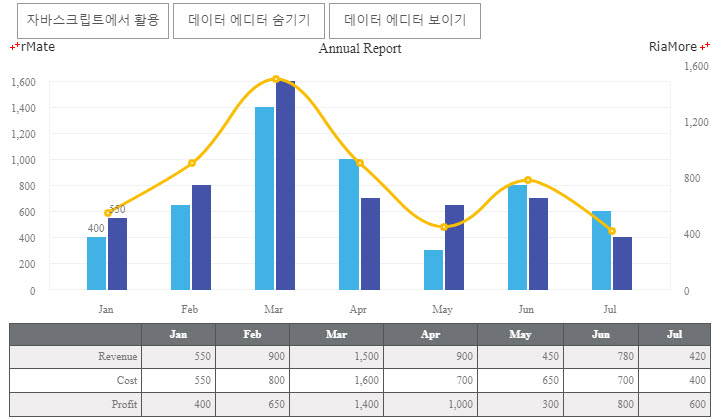
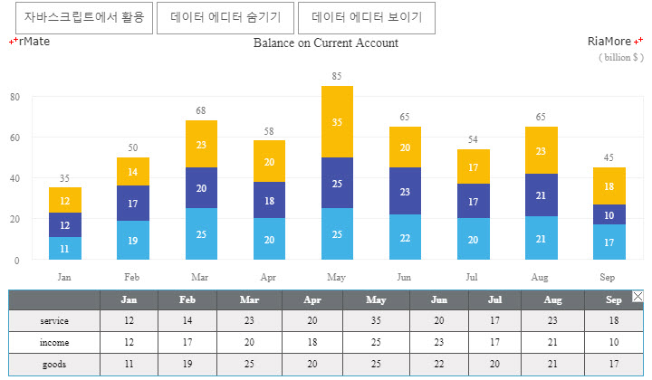
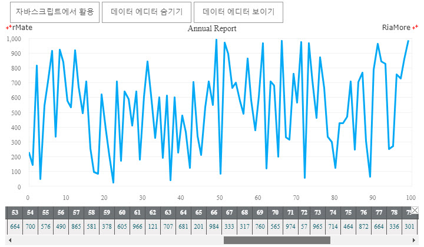

데이터 에디터
알메이트 차트는 차트의 하단에 차트에 표현된 데이터를 표시하는 테이블 형식의 데이터 에디터를 표시할 수 있습니다.
데이터 에디터에 표시된 값을 직접 수정할 수 있으며, 수정된 값은 차트에 즉시 반영되므로 시뮬레이션을 위한 작업에 유용하게 활용될 수 있습니다.
데이터 에디터 기능을 사용하기 위해서는 chartVars 변수에 useDataEditor 속성을 “true” 로 설정해야 하고, 알메이트 차트에서 사용하는 자바스크립트 에디터 라이브러리 파일에 대한 위치를 지정해 주어야 합니다.
(예, rMateChartH5.dataEditorUrl = “../rMateChartH5/JS/editablegrid-2.0.1.js”) 자바스크립트 에디터 라이브러리 파일은 제품에 포함되어 있습니다.
데이터 에디터의 사용과 관련된 속성은 <DataEditor> 노드에 설정되며, <DataEditor> 노드는 <Options> 노드의 자식 노드로 정의되어야 합니다.
다음 표는 <DataEditor> 노드의 주요 속성에 대한 설명입니다.
| 속성명 |
유효값 (*: 기본값) |
설명 |
| alternatingItemColors |
#16진수 컬러 코드의 배열
|
테이블의 행의 배경색을 번갈아 가면서 칠할 경우 색을 설정합니다.
두 개 이상의 색을 지정해야 합니다.
|
| borderColor |
#16진수 컬러 코드 표기
기본값: #000000
|
테이블의 테두리 선의 색을 지정합니다. |
| borderStyle |
none, solid(*), inset, outset
|
테이블의 테두리 선의 스타일을 지정합니다. |
| editable |
true(*), false
|
데이터 에디터의 값의 변경을 허용할지 여부를 설정합니다. |
| editorHeight |
숫자
기본값: 80
|
데이터 에디터의 높이를 지정합니다. |
| headerColors |
#16진수 컬러 코드의 배열
|
테이블 헤더의 배경색을 설정합니다. |
| headerHeight |
숫자
기본값: 22
|
데이터 에디터의 헤더의 높이를 지정합니다 |
| reverseRow |
true, false(*)
|
데이터셋에 나중에 정의된 데이터 값이 데이터 에디터 행에 먼저 표시될지 여부를 설정합니다. |
| showHeaders |
true(*), false
|
데이터 에디터의 헤더를 표시할지 여부를 설정합니다. |
| showOnInit |
true, false(*)
|
데이터 에디터를 차트가 생성되면 보이게할지 여부를 설정합니다. |
| styleName |
텍스트
|
<Style> 노드에 설정되는 스타일명을 지정합니다. |
| textAlign |
left, center(*), right
|
데이터 에디터의 셀에 표시되는 텍스트의 정렬 방식을 설정합니다. |
| useCloseButton |
true(*), false
|
데이터 에디터 닫기 버튼을 표시할지 여부를 설정합니다. |
다음은 데이터셋에 나중에 정의된 Revenue 값이 데이터 에디터의 제일 처음 행에 표시되도록 설정된 (reverseRow = “true”) 예제입니다.
var chartVars = "rMateOnLoadCallFunction=chartReadyHandler";
chartVars += "&useDataEditor=true";
rMateChartH5.dataEditorUrl = "../rMateChartH5/JS/editablegrid-2.0.1.js";
<DataEditor showOnInit="true" formatter="{numFmt}" useCloseButton="false" editorHeight="94" reverseRow="true" textAlign="right"/>
var chartData =
{"Month" : "Jan", "Profit" : 400, "Cost" : 550, "Revenue" : 550},
{"Month" : "Feb", "Profit" : 650, "Cost" : 800, "Revenue" : 900},
...

See the CodePen 알메이트 차트 - 데이터 에디터 (reverseRow = 'true' 설정)
다음은 데이터 에디터의 스타일을 지정하여 표현한 예제입니다.
아래 예제에서는 <DataEditor> 노드의 styleName 속성값이 “gridStyle” 로 지정되었고, “gridStyle” 이라는 이름의 스타일이 <Style> 노드에 정의되어 있습니다.
var chartVars = "rMateOnLoadCallFunction=chartReadyHandler";
chartVars += "&useDataEditor=true";
rMateChartH5.dataEditorUrl = "../rMateChartH5/JS/editablegrid-2.0.1.js";
<DataEditor showOnInit="true" formatter="{numFmt}" editorHeight="96" reverseRow="true" styleName="gridStyle"/>
...
<Style>
.gridStyle{color:#000000;alternatingItemColors:#f7f7f7,#ffffff;headerColors:#7dcad0,#7dcad0;headerStyleName:gridHeaderStyle;horizontalGridLines:true;horizontalGridLineColor:#5C8484;headerLineColor:#44a4c8;selectionColor:#ADC1C1;rollOverColor:#CC9999;fontWeight:bold;verticalAlign:middle;verticalGridLineColor:#abd6e6;fontWeight:normal;borderColor:#44a4c8;}.gridHeaderStyle{color:#ffffff;}}
</Style>

See the CodePen 알메이트 차트 - 데이터 에디터의 스타일 설정
다음은 데이터 에디터에 표시되는 데이터의 양이 많을 경우, 수평 스크롤바가 자동으로 표시되는 예제입니다.
var chartVars = "rMateOnLoadCallFunction=chartReadyHandler";
chartVars += "&useDataEditor=true";
rMateChartH5.dataEditorUrl = "../rMateChartH5/JS/editablegrid-2.0.1.js";
<DataEditor showOnInit="true" editorHeight="67" reverseRow="true" styleName="gridStyle"/>
<Style>
.gridStyle{color:#095c69;alternatingItemColors:#efeeee,#efeeee;headerColors:#7dcad0,#7dcad0;headerStyleName:gridHeaderStyle;horizontalGridLines:true;horizontalGridLineColor:#ffffff;headerLineColor:#ffffff;fontWeight:bold;fontSize:12;verticalAlign:middle;verticalGridLineColor:#ffffff;fontWeight:normal;borderColor:#ffffff;}.gridHeaderStyle{color:#fefefe;}}
</Style>

See the CodePen 알메이트 차트 - 데이터 에디터에 스크롤바 표시